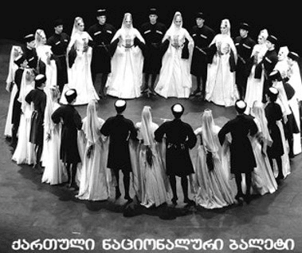
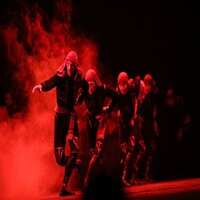
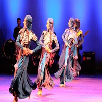
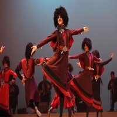
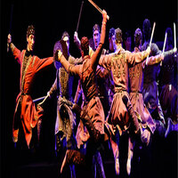

Culture of Sakartvelo
When one talks about the culture of Georgia,
country of many wonders,
the very soul and heart of it can not be ignored.
We present you the gems of my country.
Gems that shaped its culture throughout centuries.

Ballet Warriors
One of them is Georgian National Dances represented by
the most popular Georgian National Ballet “Sukhishvilebi”.
Since it was formally established in 1945, the company has performed in 98 countries,
undertaken more than 300 tours and over 20,000 performances,
entertained an estimated 60 million people and put Georgian dance on the world map.
The first ensemble was made up of 8 girls and 12 boys.
Today, the company boasts over 100 skilled performers and musicians and enjoys global recognition.
The Georgian National Ballet “Sukhishvili” is living proof that, as noted by New York Times reporter, "There is a place for high art in dealing with national traditions."
During many years in different parts of the country, unique dancing movements were appearing which have passed to generations.
Every Georgian National Dance requires special costumes and characteristics.
Here are some of the most important types of National Dances:
Kartuli
The most popular wedding dance which originally was not created for the stage, but it is the most popular one. From that dance derived Georgian Wedding Clothes and characteristics.
During the dance, the man is not allowed to touch the woman and must keep a certain distance from his partner.
The man's upper body is motionless at all times. It shows that even in love, men must control their feelings. The man focuses on his partner as if she were the only woman in the whole world.
Gandagana
This dance was introduced in 1946 and was performed by a man and a woman.
Later it changed into a group dance involving more males and females.
The roots of Gandagana is the cult of fertility.
The dance is quite complex, at first the rhythm is slow, but as the dance progresses, the rhythm increases with it.
It is performed to a cheerful song, that is why it is loved by many people especially at weddings, birthdays, and family gatherings.
Georgian Folk Music is another important characteristic of our culture:
Georgian folk music is predominantly vocal.
It is widely known for its rich traditions of vocal polyphony.
Also known for colorful modulations and unusual key changes.
When Georgian vocal polyphony was recognized by UNESCO as an Intangible Heritage masterpiece in 2001,
Chakrulo was cited as a prime example of this. Chakrulo was one of 29 musical compositions included on the Voyager Golden Records that were sent into space on Voyager 2 on 20 August 1977.
Below You Can See Other Pictures From Sukhishvilebi.
Please, Click on the image to see full size.




{kind=link}
{kind=link}
{kind=link}
{kind=link}